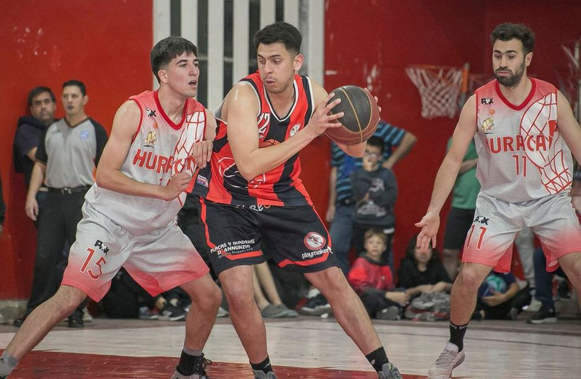
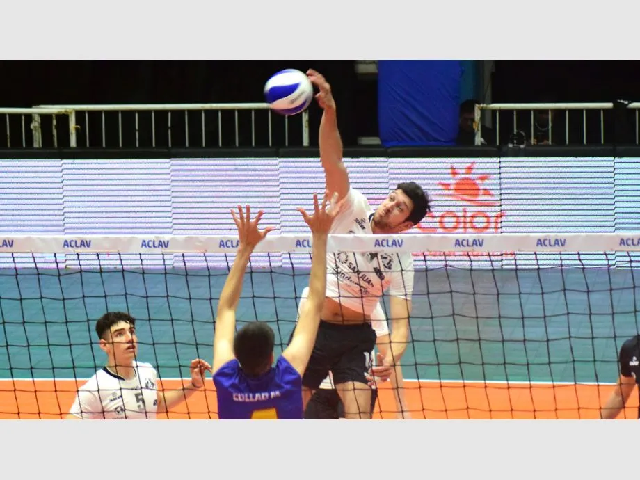

Noticias
Gran victoria de la reserva !!
En una jornada llena de futsal, la reserva goleó al Villa Nueva de Facundo Pellegrini (ex técnico gallego) por 4 a 0, gracias a un doblete de Enzo Gonzalez, uno de ellos una auténtica perla, otro de Miguel Hernandez y el úlimo de Lucas Camacho, para rubricar el perfecto resultado que los deja en la cima de la tabla.
Alumni y Español se quedaron con el primer chico de las semifinales
El Torneo Oficial de Básquet de Tres Arroyos dio inicio a los partidos de las semifinales y los equipos visitantes se hicieron fuertes para llevarse el triunfo y trasladar la definición cada uno a su casa. Argentino Junior se impuso a Huracán por 70 a 56, colocó la serie 1 a 0 y el viernes intentará sellar su pase a la final en el Estadio Cesar “Griyo” Goizueta.
Centro le ganó a UVT en el duelo de escoltas
El quiebre del encuentro estuvo en el segundo set, parcial que UVT controló durante su amplia mayoría y hasta llegó a tener set ball, pero le faltó el paso final. Obras, con Juan Sánchez al saque y un bloqueo de su capitán Rodrigo Quiroga, lo dio vuelta en el mismo cierre y no volvió a perder el control del juego. El brasileño Renato se erigió como el máximo artillero del encuentro con 13 puntos, escoltado por el también opuesto Gerónimo Elgueta que le aportó 12 a UVT. También tuvieron buena producción Alamino en Obras, con 10 tantos, y Recabarren del otro lado, con 11.

Piletas del Nahuel realizó el primer torneo en Pandemia
Fue de exhibición y para nadadores de la categoría Máster en el que participaron solo barilochenses. Además tuvo su costado solidario, ya que la inscripción fue un alimento no perecedero para colaborar con una escuela. El torneo de natación “Volviendo a la pasión” se realizó este domingo y fue organizado por el club Piletas del Nahuel de nuestra ciudad, siendo el primer evento deportivo en Bariloche, que se da en el marco de la Pandemia que causó el Covid-19 y que obligó a suspender todas las actividades durante gran parte del 2020.